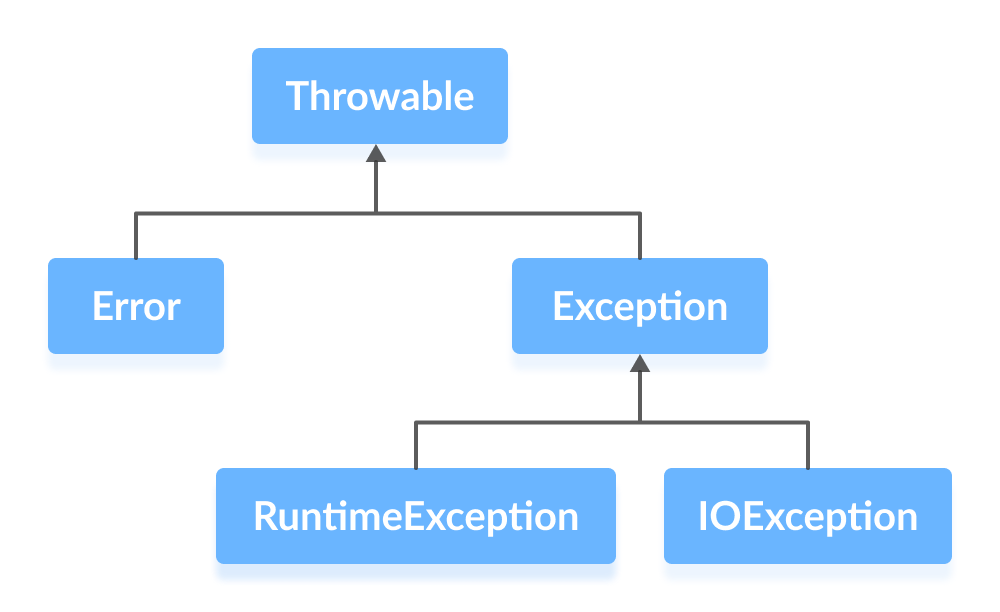

Java基础（异常）

Throwable 常用方法
- String getMessage()：返回异常发生时的简要描述
- String toString()：返回异常发生时的详细信息
- String getLocalizedMessage()：返回异常对象的本地化信息。使用 Throwable 的子类覆盖这个方法，可以生成本地化信息。如果子类没有覆盖该方法，则该方法返回的信息与 getMessage()返回的结果相同
- void printStackTrace()：在控制台上打印 Throwable 对象封装的异常信息
Error 和 Exception 的区别
- Error 类：表示严重的错误，一般是指与虚拟机相关的问题，如：内存耗尽（OutOfMemoryError）、栈溢出（StackOverflowError）、系统崩溃、虚拟机错误等，这类错误将会导致应用程序中断，仅靠程序本身无法恢复和预防
- Exception 类：表示程序可以处理的异常，可以捕获且可能恢复。遇到这类异常，应该尽可能处理异常，使程序恢复运行，而不应该随意终止异常。分为 Unchecked Exception（运行时异常，可以不处理）和 Checked Exception（检查时异常，必须处理）
运行时异常
Java 编译器不会检查它，当程序中出现此类错误时，即使没有对异常进行显式处理，也能够编译通过
| 异常 | 描述 |
|---|---|
| ArithmeticException | 算数运算异常，由于除数为 0 引起的异常 |
| ClassCastException | 当试图将对象强制转换为不是实例的子类时，抛出该异常 |
| ArrayStoreException | 由于数组存储空间不够引起的异常 |
| IndexOutOfBoundsException | 指示某排序索引（例如对数组、字符串或向量的排序）超出范围时抛出 |
| ConcurrentModificationException | 并发修改异常 |
| NullPointerException | 当应用程序试图访问空对象时，则抛出该异常 |
检查时异常（编译时异常）
非 RuntimeException 及其子类的异常，都属于 Exception 及其子类。这类异常，是程序必须进行处理的异常，否则不能被编译，即需要显式处理
| 异常 | 描述 |
|---|---|
| SQLException | 提供关于数据库访问错误或其他错误信息的异常 |
| FileNotFoundException | 当试图打开指定路径名表示的文件失败时，抛出此异常 |
| IOException | 当发生某种 I/O 异常时，抛出此异常。此类是失败或中断的 I/O 操作生成的异常的通用类 |
| IllegalArgumentException | 抛出的异常表明向方法传递了一个不合法或不正确的参数 |
| ClassNotFoundExcepton | 找不到具有指定名称的类的定义 |
throw 和 throws 的区别
- throw：在方法体内部，表示抛出异常，由方法体内部的语句处理；throw 是具体向外抛出异常的动作，所以它抛出的是一个异常实例
- throws：在方法声明后面，表示如果抛出异常，由该方法的调用者来进行异常的处理；表示出现异常的可能性，并不一定会发生这种异常
try-catch-finally
finally 代码块是否一定会执行？
当遇到下面情况不会执行：
- 当程序在进入 try 语句块之前就出现异常时会直接结束
- 当程序在 try 块中强制退出时，如使用 System.exit(0)，也不会执行 finally 块中的代码
注意：
- 当有异常发生时，catch 和 finally 进行处理后程序就结束了；
- 当没有异常发生时，在执行完 finally 中的代码后，后面代码会继续执行；
- 当 try/catch 语句块中有 return 时，finally 语句块中的代码会在 return 之前执行；程序在执行到 return 时会首先将返回值存储在一个指定的位置，其次去执行 finally，最后在返回
- 当 try/catch/finally 块中都有 return 时，finally 块中的 return 语句会覆盖 try/catch 模块中的 return 语句。对基本数据类型，在 finally 块中改变 return 的值没有任何影响，直接覆盖掉；对引用类型有影响的，返回的是在 finally 对前面 return 语句返回对象的修改值
try-catch-finally 中哪个部分可以省略？
可以的情况：
- try-catch
- try-finally
- try-catch-finally
注意：可以省略 catch 或 finally，但是 catch 和 finally 不可以同时省略
try-with-resources
- 适用范围（资源的定义）：任何实现 java.lang.AutoCloseable 或者 java.io.Closeable 的对象
- 关闭资源和 finally 块的执行顺序：在 try-with-resources 语句中，任何 catch 或 finally 块在声明的资源关闭后运行
使用 try-catch-finally 需要手动关闭资源
1 | //读取文本文件的内容 |
使用 Java7 之后的 try-with-resources 改造
1 | try (Scanner scanner = new Scanner(new File("test.txt"))) { |
通过使用分号分隔，可以在 try-with-resources 块中声明多个资源
1 | try (BufferedInputStream bin = new BufferedInputStream(new FileInputStream(new File("test.txt"))); |
其他
主线程可以捕获到子线程的异常吗？
- 线程设计的理念：“线程的问题应该线程自己本身来解决，而不要委托到外部”
- 正常情况下，如果不做特殊的处理，在主线程中是不能够捕获到子线程中的异常的。如果想要在主线程中捕获子线程的异常，可以使用 Thread 的静态方法
Thread.setDefaultUncaughtExceptionHandler(new MyUncaughtExceptionHandle());
本博客所有文章除特别声明外，均采用 CC BY-NC-SA 4.0 许可协议。转载请注明来源 爱编程的小生！
相关推荐

2024-12-17
Java基础（1-基本类型和包装类型）
Java中的基本数据类型是直接存储值，如int、char等，而包装类型是对应的对象类，如Integer、Character等。基本类型存储在栈上，性能高；包装类型存储在堆上，提供更多功能（如转换、比较）。Java支持基本类型和包装类型之间的自动装箱和拆箱。
2024-12-19
Java基础（3-hashCode）
Java 中的 hashCode 方法用于生成对象的哈希码，常用于哈希表（如 HashMap、HashSet）中的对象存储和查找。重写 hashCode 时，必须确保与 equals 方法一致，即相等的对象必须有相同的哈希码。正确实现 hashCode 可以提高哈希集合的性能并避免哈希冲突。
2024-12-18
Java基础（2-equals与运算符==）
在 Java 中，== 比较的是对象的引用（内存地址），用于基本数据类型时比较值；equals() 方法则比较对象的内容，通常需要重写以实现自定义的内容比较。== 适用于判断对象是否相同实例，equals() 用于比较对象的实际内容，二者使用场景不同。
2024-12-22
Java基础（4-String）
Java中的String是不可变的字符序列，一旦创建，其内容不能修改。每次对String的修改都会创建一个新的String对象。String类提供了多种方法，如substring(), toUpperCase(), replace()等用于字符串操作。在Java中，String常与StringBuilder和StringBuffer类一起使用，后者提供了可变的字符串操作方式。
2024-12-25
Java基础（7-泛型）
Java泛型允许在类、接口和方法中使用类型参数，增强代码的重用性和类型安全。通过泛型，程序员可以在编译时检查类型，避免运行时类型转换异常。常见的泛型类型包括List、Map等，支持类型推断和约束条件（如）。泛型提供了灵活的代码结构，同时减少了类型转换的使用，提高了代码可维护性。
2025-01-29
Java基础（8-其他）
JDK 和 JRE、JVM 区别 JRE：Java 运行环境，提供了 Java 运行所需的环境，包含了 JVM、核心类库和其他支持运行 Java 程序的文件 JDK：Java 开发工具包，提供了 Java 的开发环境和运行环境。JDK 包含了 JRE，如果只运行 Java 程序，安装 JRE 即可，要编写 Java 程序需安装 JDK JVM：Java 虚拟机，是整个 Java...
评论